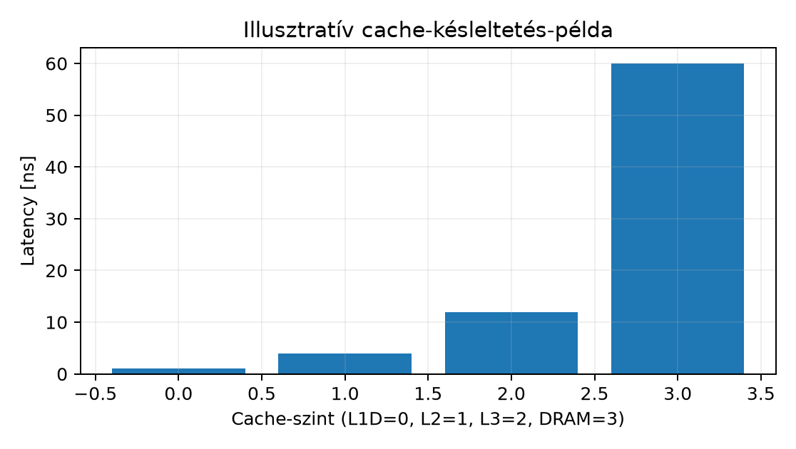

A szenior C++ fejlesztő a processz memóriáját gyakran lapos, véletlen
elérésű, egyenletes költségű tárnak tekinti: a
std::vector<T>::operator[] elsőre csak egy indexelt
hozzáférésnek tűnik. A hardver ezzel szemben cache hierarchiát,
virtuális címfordítást és több DRAM-csatornát használ. Ugyanaz az
algoritmus más nagyságrendű futásidőt adhat attól függően, hogy a
hozzáférési minta lineáris, véletlen, vagy pointer chasing jellegű. A
hatékony diagnosztikához és tervezéshez külön kell tudni választani a
cache miss (gyakori fizikai memóriaelérés) és a page fault (virtuális
oldal nem elérhető) jelenségét. Ez az alfejezet az operatív
memóriamodellt építi fel, hogy a cache/TLB/bandwidth viselkedést
mérésekkel is értelmezni lehessen a Linux labVM-en.
A fizikai memóriát általában DRAM (dynamic random-access
memory) modulok alkotják. A DRAM cellái kondenzátort
használnak, ezért időszakonként frissíteni kell (refresh).
A cellák mátrixba szerveződnek: a hozzáférés sor- és oszlopcímzéssel
történik. A késleltetést jellemző paraméterek közé tartozik a
CAS latency (oszlopcímzés utáni késleltetés) és a
RAS-to-CAS delay (sor aktiválás utáni oszlopelérés). Ezek
értéke generációfüggő; a jelen alfejezetben példaértékeket használunk,
amelyeket konkrét modulon és CPU-n ellenőrizni kell.
A DDR generáció az adatátviteli technológiát jelöli.
Például a DDR4 és DDR5 különböző jelzési módszereket, feszültséget,
bankstruktúrát és maximális adatsebességet használ. A generációk közötti
pontos sávszélesség- és latencyértékek gyorsan változó, gyártófüggő
adatok; ezeket a labVM esetén a konkrét hardver vagy a virtualizált
környezet nem feltétlenül mutatja meg teljes pontossággal. A modulnév és
a lspci/dmidecode adatai alapján ellenőrizni
kell.
A memory channel a processzor memóriavezérlője és a DRAM modulok közötti átviteli útvonalat jelenti. Egy processzor több, egymástól független csatornát is használhat. A több csatorna növeli a párhuzamos hozzáférések számát, így a teljes memória-sávszélesség (memory bandwidth) összeadódik. Az effektív sávszélesség durva számítása:
ahol a csatornák száma, az átviteli szélesség bitben, az adatátviteli sebesség (transfer/s), pedig egy 0 és 1 közötti hatékonysági tényező, amely a protokoll költségeit és a hozzáférési mintát foglalja magába. A mért effektív értéket mindig a munkaterhelés és a hozzáférési minták befolyásolják; a névleges csúcsérték nem azonos a program által elérhető értékkel.
A labVM-ben a vCPU-k nem feltétlenül kapnak közvetlen, teljes csatornát; a hipervizor ütemezése és a virtuális NUMA-topológia torzíthatja a mérést. Ezért célszerű a mérési jegyzőkönyvben mindig jelölni a VM-exposed hardware-t.
A processzor a memóriát többszintű cache hierarchián keresztül éri el. Egy tipikus x86-64 felépítésben a maghoz közeli, de a magon belül külön-külön L1I (L1 instruction) és L1D (L1 data) gyorsítótár található, felettük a magonkénti vagy magcsoportonkénti L2, majd a magok között osztozó LLC (last-level cache) vagy L3. A méretek és késleltetések CPU-generációnként változnak; a következő táblázat illusztratív, nem ellenőrzött mérési adat:

| Cache-szint | Példa latency [ns] | Példaméret | Scope |
|---|---|---|---|
| L1D | ~1 | 32–48 KiB/mag | mag |
| L2 | ~4 | 256–2048 KiB/mag | mag |
| L3/LLC | ~12 | 8–64 MiB | közös |
| DRAM | ~60 | GB–TiB | rendszer |
Ezek a számok csak az arányokat érzékeltetik; a labVM-ben a hipervizor és a NUMA elhelyezés jelentősen befolyásolhatja őket.
A cache a főmemóriát cache line egységekben mozgatja, x86-64-en tipikusan 64 byte. Ha a program egyetlen byte-ot olvas, a hardver a hozzá tartozó 64 byte-os sort kezeli. Ezért a szekvenciális bejárás jól kihasználja az előzetes betöltést, míg a szétszórt hozzáférések felesleges adatot is mozgatnak.
Többmagos rendszerben a cache-ek koherenciáját hardveres protokoll
biztosítja, tipikusan MESI (Modified, Exclusive,
Shared, Invalid) vagy annak kiterjesztései. Ha két mag ugyanazt a cache
line-t írja, a sor oda-vissza vándorol, ami „false sharing” esetén akkor
is drámai lassulást okoz, ha a két változó logikailag független, de
fizikailag ugyanabban a 64 byte-os sorban lakik. Ez a C++
struktúra-elrendezésnél fontos: a std::atomic<size_t>
mezők sűrűn egymás mellé pakolása néha teljesítményvesztést okoz.
A processz virtuális címe nem azonos a fizikai címmel. Az MMU
(memory management unit) a virtuális címet lapokra (page)
bontja, és a page table segítségével leképezi fizikai
keretekre. A fordítás eredményét a TLB (translation lookaside
buffer) cache-eli. A TLB találat gyors; TLB miss esetén a
hardver vagy a kernel oldalletár-bejárást végez
(page walk), amely több memóriahozzáférést is jelent.
A TLB nem a főmemória tartalom-cache-e, hanem a címfordítás cache-e. Ezért a TLB miss nem ugyanaz, mint a cache miss, és egyik sem ugyanaz, mint a page fault. A page fault akkor következik be, ha a virtuális oldalhoz nincs érvényes fizikai leképezés, például mert az oldal nem volt eddig lefoglalva, vagy swapra került. A page fault kezelése kernelbe lépéssel, esetleg lemez I/O-val jár, ami több nagyságrenddel drágább, mint egy cache miss.
A nagy, hosszú életű C++ adathalmazoknál a huge page
(például 2 MiB vagy 1 GiB lap) csökkenti a TLB-bejegyzések számát és a
page walk költségét. Linux alatt ez később a
mmap/madvise és a hugetlbfs
témakörhöz csatlakozik. Egy tízéves C++ fejlesztő számára a lényeg az,
hogy a címfordítás ugyanúgy cache-elve van, mint az adat; nagy
memóriájú, ritkán használt adatoknál a TLB-miss nem elhanyagolható.
A latency egyetlen memória-hozzáférés késleltetése időegységben (ns), a bandwidth az időegység alatt átvihető adatmennyiség (GiB/s vagy GB/s). A két fogalom nem cserélhető fel. Egy rendszernek lehet nagy sávszélessége sok csatornával, miközben egyetlen véletlen hozzáférés késleltetése magas. A szekvenciális bejárás inkább a sávszélességet használja ki, míg a pointer chasing inkább a latency-t fizeti meg.
A kapcsolatot a Little’s law segítségével lehet modellezni: egy adott kérési sebességhez (IOPS) és késleltetéshez szükséges átlagos párhuzamos kérések száma:
ahol dimenziótlan, egysége 1/s, egysége s. Ha a CPU nem indít elég párhuzamos memóriaho hozzáférést, a késleltetés dominál, és a nagy sávszélesség kihasználatlan marad. Ez az oka annak, hogy a naiv pointer chasing szinte mindig lassú, még sok csatornás rendszeren is.
A C++ oldalon a szoftver-prefetching
(__builtin_prefetch) és a hardveres prefetcher egyaránt a
késleltetés elrejtését szolgálja. A hardveres prefetcher a szekvenciális
mintákat jól felismeri, a véletlen ugrásokat azonban nem.
A C++ struktúrák elrendezése közvetlenül befolyásolja a cache-ek kihasználását. Az AoS (array of structures) esetben a program egy tömböt tárol, és minden elem tartalmazza az összes mezőt, például:
struct ParticleAoS {
float x, y, z;
float vx, vy, vz;
};
std::vector<ParticleAoS> particles_aos;Ha a program például csak a x mezőket összegzi, minden
egyes elembe való belépéskor a 64 byte-os cache sor tartalmazza a
vx, vy, vz mezőket is, és a
hasznos adat aránya alacsony. Az SoA (structure of
arrays) külön tömbökben tárolja a mezőket:
struct ParticlesSoA {
std::vector<float> x;
std::vector<float> y;
std::vector<float> z;
std::vector<float> vx;
std::vector<float> vy;
std::vector<float> vz;
};Ekkor a x mező lineárisan, cache line-okba sűrítve
érhető el. A SoA akkor előnyös, ha a munkaterhelés jellemzően csak
egy-egy mezőt olvas, míg az AoS akkor lehet jobb, ha a program minden
mezőt egyszerre használ, mert a kapcsolódó adatok egy cache sorba
kerülnek.
A pointer chasing jellegű adatszerkezetek, például a
std::list vagy egy láncolt fa, minden lépésnél egy új,
gyakran kiszámíthatatlan memóriacímet követnek. A hardveres prefetcher
nem tudja előre betölteni a következő elemet, ezért minden lépés a
teljes DRAM-latency-t fizetheti. Ugyanaz az elemszám így nagyságrenddel
lassabb lehet, mint egy folytonos std::vector bejárása. A
szenior C++ fejlesztő ezért akkor használ pointer chasing struktúrákat,
ha a művelet logikailag azt követeli meg, és a hozzáférések száma
korlátozott.
A ECC (error-correcting code) a DRAM-modulokhoz
hozzáadott redundáns bitek segítségével érzékeli és gyakran javítja az
adathibákat. A tipikus szerver ECC javítja az egybites hibákat, és
érzékeli a kétbites hibákat. A Linux rendszerekben az eseményeket
hardver- és kernelkomponensek jelzik, például az EDAC
vagy a rasdaemon/mcelog eszközök.
A korrigált hiba (corrected error) olyan memóriahiba, amelyet a hardver javítani tudott; a rendszer fut tovább, de a hiba gyakorisága jelzi a modul esetleges meghibásodását. Az ilyen eseményeket naplózni kell, és a modul cseréjét meg kell fontolni, mert a gyakori korrigált hibák előre jelzik a nem korrigált hibát.
A nem korrigált hiba (uncorrected error)
adatvesztést, processz-összeomlást, kernel panic-ot vagy gépleállást
okozhat. A Linux a mce (machine check exception)
mechanizmussal kezeli a hardverhibákat. A
/sys/devices/system/edac/mc/ alatt lehet az EDAC
számlálókat vizsgálni, ha a rendszer támogatja. A labVM-ekben az ECC
általában nem látható, mert a virtuális gép nem kap közvetlen
hozzáférést a fizikai memóriamodulok ECC-állapotához; a hardverhibás
működést a hipervizor szintjén kell jelezni.
A következő példa egy Linux labVM-et használ, és bemutatja, hogyan lehet a cache hierarchiát és a hozzáférési mintákat megfigyelni. Az adatok illusztratívak, mert a valós mérést a labhost hardver- és VM-képességei határozzák meg.
Labtarget: labvm01, account
labuser, UID 1000, a rendszerinformációs parancsokhoz nem
kell sudo, a perf hardveres számlálók
használatához előfordulhat, hogy a perf_event_paranoid
beállítás miatt sudo szükséges.
lscpu --caches
getconf -a | grep -E 'CACHE|PAGESIZE'numactl --hardware#include <cstdint>
#include <cstdio>
#include <cstdlib>
#include <vector>
constexpr size_t N = 1UL << 20; // 1 Mi elem
constexpr size_t STRIDE = 16; // 64 byte cache line-onként 4 int32
void linear_sum(const std::vector<uint32_t>& data) {
uint64_t sum = 0;
for (size_t i = 0; i < data.size(); i += STRIDE) {
sum += data[i];
}
std::printf("linear_sum=%llu\n", static_cast<unsigned long long>(sum));
}
void random_sum(const std::vector<uint32_t>& data) {
// Egyszerű, pszeudovéletlen indexgenerátor; determinisztikus, illusztratív.
uint64_t sum = 0;
size_t idx = 0;
for (size_t k = 0; k < data.size(); k++) {
idx = (idx * 1103515245 + 12345) & (data.size() - 1);
sum += data[idx];
}
std::printf("random_sum=%llu\n", static_cast<unsigned long long>(sum));
}
int main(int argc, char** argv) {
std::vector<uint32_t> data(N);
// Feltöltés: a page fault itt történik, nem a bejárásnál.
for (size_t i = 0; i < data.size(); ++i) {
data[i] = static_cast<uint32_t>(i);
}
if (argc > 1 && argv[1][0] == 'r') {
random_sum(data);
} else {
linear_sum(data);
}
return 0;
}A program lefordítása és futtatása:
g++ -O2 -o cache_probe cache_probe.cpp
perf stat -e cycles,instructions,cache-references,cache-misses,page-faults ./cache_probe
perf stat -e cycles,instructions,cache-references,cache-misses,page-faults ./cache_probe rA várt kimenet a lineáris bejárásnál alacsonyabb cache-miss arányt mutat, mint a véletlenszerűnél; a page fault mindkét esetben a feltöltés alatt keletkezik, nem a bejárásnál. Illusztratív, nem mért eredmény lehet például: lineárisnál 0.1 cache-miss/kérés, randomnál 0.8 cache-miss/kérés, page fault mindkettőnél hasonló, néhány ezer. A valós számok a vCPU-tól, cache-mérettől és a hipervizor ütemezésétől függenek.
Ellenőrzési feltétel: a perf stat fut,
és a kimenetben a cache-misses értéke a véletlen bejárásnál
nagyobb, mint a lineárisnál. Ha a page-faults jelentősen
megnő a bejárás alatt, akkor a vektor valószínűleg nem lett feltöltve,
vagy a rendszer szorult memória alá.
A leggyakoribb fogalmi hiba a cache miss és page fault
összemosása. A cache miss azt jelenti, hogy az adat nincs a
megcélzott cache-szintben, de a fizikai memóriában elérhető; a page
fault azt jelenti, hogy a virtuális oldalhoz nincs érvényes leképezés,
ezért a kernel beavatkozik. A perf stat két külön eseményt
mutat: cache-misses és page-faults. Ha egy
program sok memóriát foglal, de előre nem inicializálja, a page fault az
első érintéskor (first touch) jelenik meg, nem a cache
miss.
A false sharing diagnosztikája csalóka: a program
logikailag független atomi változókat ír, de a cache-miss és a futásidő
együtt nő. A javítás a 64 byte-os cache line figyelembevételével történő
elrendezés, például alignas(64) a forró mezőknél.
A mérési zaj gyakori ellenpróba: a CPU
frekvenciaváltás, a hardveres prefetcher, a hipervizor ütemezése és más
processzek hatása eltorzítja a perf stat eredményét. A
mérés előtt rögzíteni kell a kimenetet, a CPU modellt, a kernel verziót
és a munkaterhelést, és több ismétlést kell végezni.
| Tünet | Lehetséges ok | Adatgyűjtés | Egy változtatás | Ellenőrzés |
|---|---|---|---|---|
Magas page-faults első érintésnél |
Nem előre feltöltött nagy vektor | perf stat -e page-faults |
Inicializálás a mérés előtt | page-faults csökken |
Magas cache-misses véletlen bejárásnál |
Rossz locality | perf stat -e cache-misses |
SoA vagy indexelt tömb | Miss arány csökken |
| Két szál lassul | False sharing | perf c2c |
alignas(64) |
perf c2c contention csökken |
Egy C++ szolgáltatás indításkor lefoglal egy 8 GiB-os
std::vector-t, de csak az első 128 MiB-ot használja. A
perf stat magas page-faults értéket mutat a
szolgáltatás indulásakor. Indokold meg, hogy ez cache miss vagy page
fault, és magyarázd el a különbséget a two fogalom között.
A labVM-en futtasd a lscpu --caches,
getconf -a | grep -E 'CACHE|PAGESIZE', valamint a
numactl --hardware parancsokat. Dokumentáld a kimenet
alapján a cache-szinteket, a cache line méretét és a lapméretet. Írd le,
hogy a numactl --hardware kimenet mely sora jelzi a NUMA
node-ok és a memóriacsatornák elrendezését.
Egy képfeldolgozó C++ függvény minden pixelre kiszámítja a pozícióját
egy láncolt listában tárolt adatszerkezetből. A futási idő váratlanul
magas, és a CPU kihasználtsága 100%. Gyűjts
perf stat -e cache-misses,page-faults adatokat, alkoss
hipotézist a tünetre, hajts végre egyetlen változtatást (például a
láncolt listát folytonos tömbre cseréled), és ellenőrizd a hatást.
A magas page-faults érték page fault,
nem cache miss. A std::vector lefoglalása 8 GiB virtuális
címet foglal le, de a fizikai lapok csak akkor rendelődnek hozzá, amikor
a program először írja vagy olvassa őket. Az indításkor az
inicializálatlan oldalak első érintése minor page faultot okoz. A cache
miss ezzel szemben akkor lépne fel, ha az adat már fizikai memóriában
van, de a cache-ben nincs. A kettő különbözik: a page fault kernelbe
lépéssel és lapallokációval jár, a cache miss hardveres memóriaelérést
jelent.
A parancsok futtatása után a lscpu --caches kimenetében
a L1d, L1i, L2, L3
sorok jelzik a cache-szinteket, méretüket és hozzárendelésüket a
CPU-khoz. A getconf PAGESIZE a lapméretet adja meg,
jellemzően 4096 byte x86-64-en. A numactl --hardware
kimenetében a node sorok mutatják a NUMA node-ok számát, és
a node distances mátrix a node-ok közötti relatív
távolságot. A VM-exposed NUMA topológia eltérhet a fizikai hosttól.
A perf stat kimenet valószínűleg magas
cache-misses értéket mutat, míg a page-faults
alacsony marad, mert a láncolt lista elemei már a memóriában vannak. A
hipotézis az, hogy a pointer chasing minden lépésnél új cache line-t
érint, és a hardveres prefetcher nem tudja előre betölteni a következő
elemet. Egyetlen változtatásként a láncolt lista helyett egy folytonos
std::vector struktúrát használunk. Az ellenőrzés után a
cache-miss arány és a futási idő csökken, mert a szekvenciális bejárás
kihasználja a cache line-ok és a prefetcher működését.
Postcondition: A program cache-miss aránya a mérési
jegyzőkönyvben rögzítve csökken, a page-faults értéke nem
nő meg, és a futási idő érdemben javul.
A fizikai memória modellje cache hierarchiából, TLB-ből és több DRAM-csatornából áll. A cache line 64 byte-os egységekben mozog, a koherencia protokoll a többmagos konzisztenciát biztosítja. A TLB a virtuális-fizikai címfordítást gyorsítja; a TLB miss nem page fault, a page fault a hiányzó lap eseménye. A latency egyetlen hozzáférés késleltetése, a bandwidth az időegység alatti adatmennyiség; a kettő a Little’s law révén kapcsolódik. Az AoS/SoA választás és a pointer chasing közvetlenül befolyásolja a cache-kihasználást. Az ECC a korrigált hibákat jelzi, a nem korrigált hibák súlyos hardverhibát okoznak.
A fenti források ebben a kérésben nem voltak ellenőrzött, olvasott
dokumentumok. A DDR generációk, cache-méretek, latency- és
bandwidth-értékek a jelen szövegben példaértékek vagy hipotetikus
modellek; konkrét hardveren, VM-exposed képességeknél és
szoftververzióknál külön mérést és gyártói specifikáció ellenőrzést kell
végezni. A perf stat hardveres számlálói a
perf_event_paranoid beállítástól és a VM-felügyelettől
függenek, ezért a labVM-en a kimenetet a tényleges környezetben kell
validálni.